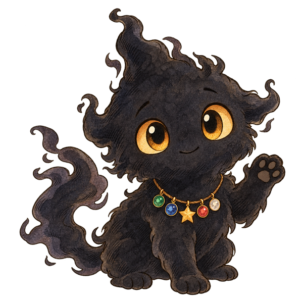
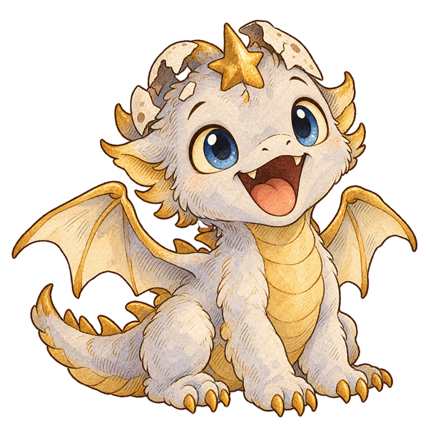

מסע השרשרת
ארבעה איים. חמישה אורות.
הצל הקטן
מכינים את הזירה…

משחררים יצורים מהצל, מדליקים את השרשרת ואוספים קלפים.
יצורים עם סימן שאלה עדיין אחוזים בצל. משחררים אותם במסע השרשרת, והם מצטרפים אליך יחד עם הקלף שלהם.
בכל ניצחון בדרך לגמר בוחרים כוח חדש. הפסדתם? השילוב נשמר לניסיון הבא.
ניצחת בגביע. עכשיו הזירה עצמה משתנה.
אחרי 5 שניות המחסה הראשון מתפורר. אחריו מתפורר עוד מחסה כל 4 שניות.
סימון זהב וספירה לאחור מזהירים לפני ההתפוררות. המשיכו לזוז, התחמקו והביסו את הבזוק.
הפרס: תג ״אלוף הזירה הפתוחה״האתגר נשאר פתוח. הפסד אינו מוחק את הגביע או את הכוחות.

| יצור | קרבות | ניצחונות | נזק כולל |
|---|